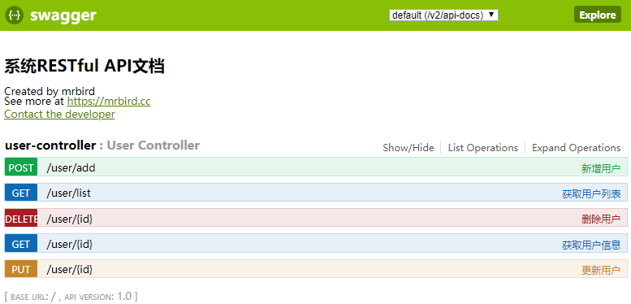
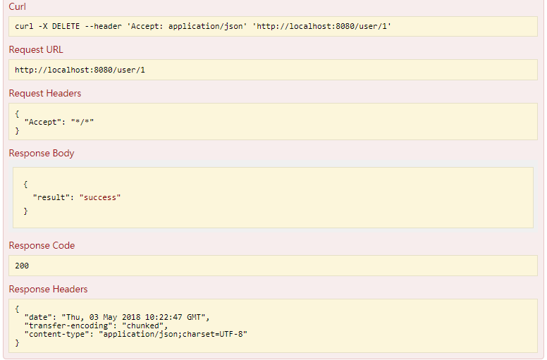

Swagger是一款可以快速生成符合RESTful风格API并进行在线调试的插件。本文将介绍如何在Spring Boot中整合Swagger。
在此之前，我们先聊聊什么是REST。REST实际上为Representational State Transfer的缩写，翻译为“表现层状态转化” 。如果一个架构符合REST 原则，就称它为RESTful架构。
实际上，“表现层状态转化”省略了主语，完整的说应该是“资源表现层状态转化”。什么是资源（Resource）？资源指的是网络中信息的表现形式，比如一段文本，一首歌，一个视频文件等等；什么是表现层（Reresentational）？表现层即资源的展现在你面前的形式，比如文本可以是JSON格式的，也可以是XML形式的，甚至为二进制形式的。图片可以是gif，也可以是PNG；什么是状态转换（State Transfer）？用户可使用URL通过HTTP协议来获取各种资源，HTTP协议包含了一些操作资源的方法，比如：GET 用来获取资源， POST 用来新建资源 , PUT 用来更新资源， DELETE 用来删除资源， PATCH 用来更新资源的部分属性。通过这些HTTP协议的方法来操作资源的过程即为状态转换。
引入Swagger依赖
本文使用的Swagger版本为2.6.1：
|
|
配置SwaggerConfig
使用JavaConfig的形式配置Swagger：
|
|
在配置类中添加@EnableSwagger2注解来启用Swagger2，apis()定义了扫描的包路径。配置较为简单，其他不做过多说明。
Swagger常用注解
@Api：修饰整个类，描述Controller的作用；@ApiOperation：描述一个类的一个方法，或者说一个接口；@ApiParam：单个参数描述；@ApiModel：用对象来接收参数；@ApiProperty：用对象接收参数时，描述对象的一个字段；@ApiResponse：HTTP响应其中1个描述；@ApiResponses：HTTP响应整体描述；@ApiIgnore：使用该注解忽略这个API；@ApiError：发生错误返回的信息；@ApiImplicitParam：一个请求参数；@ApiImplicitParams：多个请求参数。
编写RESTful API接口
Spring Boot中包含了一些注解，对应于HTTP协议中的方法：
@GetMapping对应HTTP中的GET方法；@PostMapping对应HTTP中的POST方法；@PutMapping对应HTTP中的PUT方法；@DeleteMapping对应HTTP中的DELETE方法；@PatchMapping对应HTTP中的PATCH方法。
我们使用这些注解来编写一个RESTful测试Controller：
|
|
对于不需要生成API的方法或者类，只需要在上面添加@ApiIgnore注解即可。
启动&测试
启动项目，访问http://localhost:8080/swagger-ui.html即可看到Swagger给我们生成的API页面：

点击接口下的“Try it out”Swagger会用curl命令发送请求，并且返回响应信息，如下所示:

源码链接：https://github.com/wuyouzhuguli/Spring-Boot-Demos/tree/master/20.Spring-Boot-Swagger2